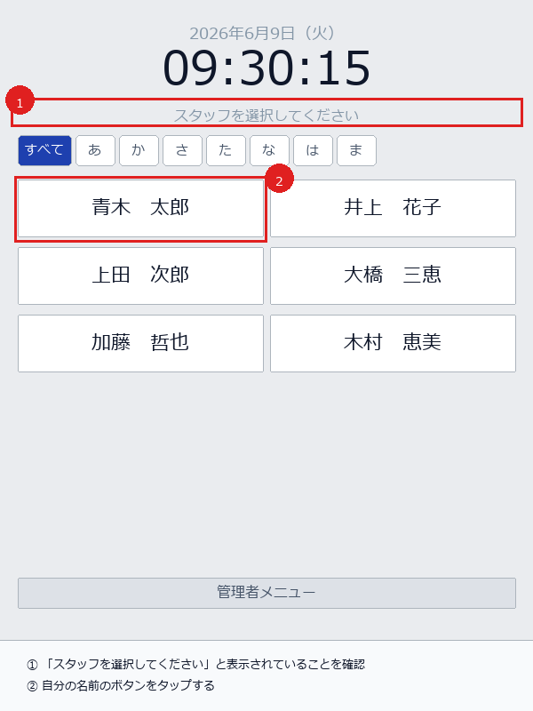
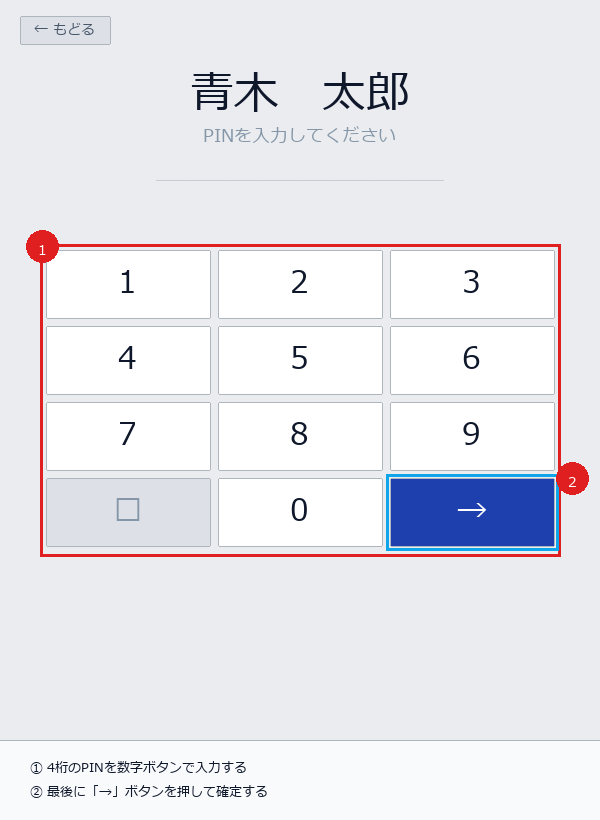
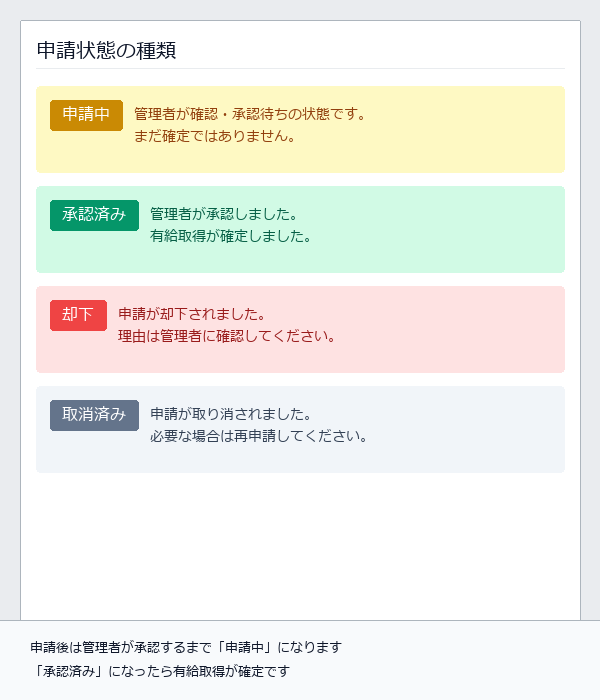

📅
有給申請マニュアル
申請者向け
株式会社 穂乃味
このマニュアルでは、タイムカードアプリから有給休暇を申請する手順を画面を見ながら説明します。
スマートフォン・タブレットから簡単に申請できます。不明な点は管理者にご相談ください。
STEP 1名前を選ぶ
STEP 2PIN 入力
STEP 3有給申請ボタン
STEP 4日付を選択
STEP 5申請する
STEP 6状態を確認
STEP 1 – 2
タイムカードを開いてPINを入力する
STEP
1
1
タイムカード画面を開いて自分の名前を選ぶ
スタッフ選択画面

-
1画面に「スタッフを選択してください」と表示されていることを確認してください。表示がない場合は再読み込みをしてください。
-
2一覧から自分の名前のボタンをタップします。「あ行」「か行」などのタブで絞り込みもできます。
注意：必ず自分の名前を選んでください。他の人の名前を選ぶとその人の記録になってしまいます。
STEP
2
2
4桁のPINを入力してログインする
個人認証

-
1数字ボタンをタップして4桁のPINを入力します。入力した桁数が「●」で表示されます。
-
24桁入力したら→ボタンを押して確定します。
-
!初回ログイン時：「初回ログインです。4桁のPINを設定してください。」と表示されます。自分で決めた4桁の数字を2回入力してPINを設定してください。
入力ミスした場合：「⌫」ボタンで1桁ずつ削除できます。最初からやり直す場合も「⌫」を押し続けてください。
STEP 3 – 4
有給申請ボタンを開いて日付を選択する
STEP
3
3
打刻画面を下にスクロールして「有給申請」ボタンをタップ
有給申請フォームを開く

-
1ログインすると打刻画面が表示されます。画面を下にスクロールしてください。
-
2画面の下部に緑色の有給申請ボタンが表示されます。タップすると申請フォームが開きます。
有給申請ボタンが表示されない場合：有給残日数が0日、または管理者が有給を付与していない可能性があります。管理者にご連絡ください。
STEP
4
4
カレンダーで取得日を選択する
日付の選択（複数可）

-
1カレンダーから有給を取りたい日をタップして選択します。選んだ日が青くなります。複数日まとめて選択できます。
-
—グレーの日付はすでに申請済みのため選択できません。
-
2「有効残日数」と「有給の期限」を確認してから申請するボタンをタップします。
注意：申請できるのは当月内の日付のみです。翌月分は翌月になってから申請してください。
STEP 5 – 6
申請を送信して状態を確認する
STEP
5
5
「申請する」ボタンを押して送信する
申請の送信

-
1「有給申請を送信しました（日付）」というメッセージが表示されたら申請完了です。
-
2「OK」をタップして画面を閉じます。
送信後の注意：申請はすぐに管理者に届きます。ただし承認されるまでは確定ではありません。承認されたかどうかは管理者に確認するか、次のSTEP 6で確認してください。
STEP
6
6
申請後の状態を確認する
ステータスの種類

| ステータス | 意味 | 次のアクション |
|---|---|---|
| 申請中 | 管理者が確認・承認待ちの状態 | そのままお待ちください |
| 承認済み | 管理者が承認し有給取得が確定 | 対応不要です |
| 却下 | 申請が却下された | 管理者に理由を確認してください |
| 取消済み | 申請が取り消された | 必要なら再申請してください |
注意事項 & FAQ
よくあるケースと注意事項
申請は当月内の日付のみ
有給申請できるのは今月の日付だけです。翌月分の申請は翌月になってから行ってください。
残日数がないと申請できない
有給残日数が0日、または期限切れの場合はエラーになり申請できません。管理者に残日数を確認してください。
承認されるまで確定ではない
申請後は「申請中」状態です。管理者が承認して初めて有給取得が確定します。早めに申請しましょう。
間違えた場合は管理者へ連絡
間違えた日付で申請した場合や、申請を取り消したい場合は管理者に連絡してください。
よくある質問 Q&A
有給申請ボタンが表示されない / タップできない
有給残日数が0日または期限切れの場合は表示されません。管理者に「有給付与がされているか」を確認してください。
同じ日に2回申請してしまった
申請済みの日はカレンダーでグレー表示になり、重複申請はできない仕組みになっています。不安な場合は管理者に確認してください。
PINを忘れてしまった
管理者にPINリセットを依頼してください。リセット後、再ログイン時に新しいPINを設定できます。
申請したのに「申請中」のまま長時間経っている
管理者がまだ確認していない可能性があります。急ぎの場合は管理者に直接確認してください。
申請した有給をキャンセルしたい
スタッフ側からのキャンセル操作はありません。管理者に「申請の取消」を依頼してください。